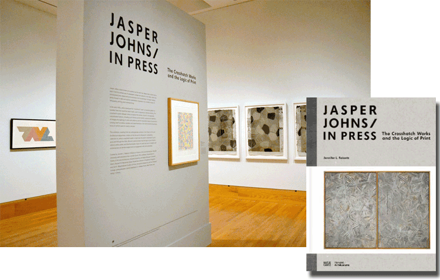

The Jasper Johns / In Press exhibition grew out of a collaboration between Harvard Art Museums and Harvard University’s Department of History of Art and Architecture. It was curated and organized by art history professor Jennifer L. Roberts, and four undergraduates enrolled in her class studying Johns’s diptych painting The Dutch Wives. A hardcover catalogue was published with Hatje Cantz Verlag.